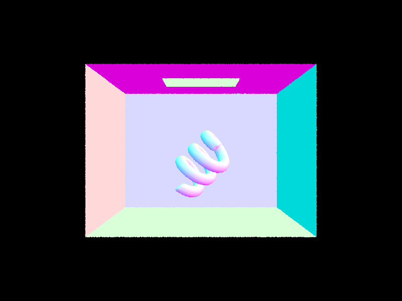

CS184/284A Spring 2025 Homework 3 Write-Up
Link to webpage: https://cal-cs184-student.github.io/hw-webpages-awesomesauce-1/hw3/index.html Link to GitHub repository: https://github.com/cal-cs184-student/hw-webpages-awesomesauce-1/tree/a72c29ca82c89d16b3d6cafe00a9566cdbda51e3/hw3

Overview
In this project, I implemented a basic path tracer to render photorealistic images using global illumination. Path tracing simulates the physics of light transport by tracing the paths of many rays as they bounce through a 3D scene, accounting for both direct lighting from light sources and indirect lighting due to interreflections between surfaces. To achieve this, I first implemented ray-scene intersection tests, including support for triangle and sphere primitives. I then built a Bounding Volume Hierarchy (BVH) to accelerate these intersection tests, which dramatically improved performance by reducing the number of -ray checks needed per bounce. I also developed a diffuse Bidirectional Scattering Distribution Function (BSDF) to simulate how light reflects off matte surfaces, and used Monte Carlo integration with Russian Roulette termination to estimate both direct and indirect lighting contributions. To improve image quality while reducing render times, I implemented adaptive sampling to concentrate computation on pixels with higher variance. This assignment deepened my understanding of how physically based rendering works under the hood. I especially enjoyed learning how probabilistic techniques like Monte Carlo integration are applied to rendering, and how theoretical concepts like light transport and BSDFs translate into code.Part 1: Ray Generation and Scene Intersection
In this part, I implemented ray generation from the camera and intersection tests for triangle and sphere primitives. This is the foundation of a path tracer, allowing rays to interact with the scene geometry and form the basis of rendering.
-
Ray Generation:
The core rendering loop inPathTracer::raytrace_pixel()generates camera rays through each pixel:- Given pixel coordinates
(x, y), we use Monte Carlo sampling to jitter rays inside the pixel bounds for anti-aliasing. - We call
Camera::generate_ray()to produce a ray through the scene, using the camera's FOV to compute the sensor plane coordinates. - The ray direction is computed in camera space and then transformed into world space using the
c2wmatrix. The ray's origin is the camera's position.
- Given pixel coordinates
-
Triangle Intersection (Möller–Trumbore):
To test if a ray hits a triangle:- We calculate two edge vectors:
E1 = P1 - P0,E2 = P2 - P0. - We compute
S = O - P0,S1 = D × E2, andS2 = S × E1. - We solve for
t,b1, andb2using Cramer’s Rule and check if the point lies within the triangle (i.e.,b1 >= 0,b2 >= 0,b1 + b2 <= 1). - If valid and closer than previous hits, we store the intersection data and update
max_t.
- We calculate two edge vectors:
-
Sphere Intersection:
For a sphere with centerCand radiusR, we substitute the ray equation into the sphere equation:- This yields a quadratic in t:
at² + bt + c = 0. - We solve it using the quadratic formula and pick the smallest valid t within range.
- If a valid hit is found, we record the intersection point and surface normal.
- This yields a quadratic in t:
-
Normal Shading:
To verify correct intersection logic, we render each pixel using its surface normal as RGB values. This produces colorful images showing object contours and orientation.

|

|
Part 2: Bounding Volume Hierarchy
To improve the rendering performance of complex scenes, I implemented a Bounding Volume Hierarchy (BVH) acceleration structure. Without BVH, each ray checks for intersections with every single primitive in the scene, which quickly becomes infeasible for models with thousands of triangles.
-
BVH Construction Algorithm:
- Called
build_accel()before rendering to recursively build the BVH. - Each node contains a bounding box over a group of primitives.
- If the number of primitives is below a set threshold, it becomes a leaf node.
-
If not, we:
- Compute the bounding box of all primitive centroids.
- Choose the axis with the largest extent
(x, y, or z)to split on. - Split the primitives into two groups based on whether their centroids fall to the left or right of the midpoint along that axis.
- Recurse on the two halves to build the left and right subtrees.
- If all primitives fall on one side, split the list evenly to avoid infinite recursion.
- Called
-
BVH Intersection:
- Each ray checks whether it intersects the bounding box of the current node.
- If the node is a leaf, we test against all its primitives.
- If it's an internal node, we recurse on the left and right children (if the ray hits their bounding boxes).
- This dramatically reduces the number of unnecessary intersection tests.
-
Splitting Heuristic:
- I used the average of centroid positions to split primitives across the longest axis.
- This heuristic provides a decent balance between speed and simplicity, and avoids pathological cases by falling back to even splitting when needed.
-
Rendering Large Scenes with BVH:
- Adding a BVH reduced intersection tests per ray from tens of thousands to single digits, and brought render times down from several seconds (or minutes) to milliseconds.
- For simple scenes like
CBspheres_lambertian.dae, BVH has minimal impact since there are very few primitives (seconds vs. microseconds) -
For anything with more geometry like
CBlucy.daeorwall-e.dae, BVH makes rendering feasible (at least 5 minutes vs. few seconds). So although there's a small cost to building the BVH up front, it pays off massively during rendering.
|
|
|
|
Part 3: Direct Illumination
In this part, we implemented two versions of direct lighting estimation: uniform hemisphere sampling and importance sampling over scene lights. Both methods simulate direct illumination by casting shadow rays from a surface point to potential light sources.
-
Uniform Hemisphere Sampling:
-
Implemented in
estimate_direct_lighting_hemisphere(). For each intersection point:- We first transform the local surface normal to form an object-space coordinate frame (where the normal points along the +z axis).
- We take
num_samplessamples uniformly across the hemisphere usinghemisphereSampler.get_sample(). - Each sampled direction
wiis converted to world space witho2wand used to create a shadow ray. - We trace the shadow ray. If it hits an emissive object (like a light source), we accumulate that light's contribution.
- The contribution is calculated using the BSDF value at the surface (for Lambertian,
albedo / pi) and cosine of the angle between the surface normal and the direction to the light. - We normalize the result by dividing by the number of samples and the hemisphere PDF (which is
1 / 2pifor uniform sampling).
- This method is easy to implement and works well for general lighting, but it's very inefficient. Since it randomly samples directions, most rays miss the light completely, especially with small or point lights. This leads to noisy images and slower convergence.
-
Implemented in
-
Importance Sampling Over Lights:
-
Implemented in
estimate_direct_lighting_importance(). This method focuses rays toward known light sources, greatly improving efficiency.- We loop through each
SceneLightin the scene. - If it's a delta light (like a point light), we only sample once. Otherwise, we take
ns_area_lightsamples from the light's surface. -
For each light sample, we call
light->sample_L()which returns:wi: a unit direction vector from the surface to the light sample.distance: the distance to the light sample.pdf: the probability of this light sample.radiance: the incoming light energy alongwi.
- We check if
wi.zis negative (i.e., light is behind the surface) and skip it if so. - We shoot a shadow ray from the surface to the light point, with
max_t = distance. - If there is no occluder in the way, we add this sample's contribution, weighting it with the Lambertian BSDF and
cos(θ), and dividing by the PDF.
- We loop through each
- This method produces much cleaner images, especially for scenes with point or small area lights. Unlike hemisphere sampling, it guarantees samples are taken directly toward lights, so fewer rays are wasted.
-
Implemented in
Demo: Hemisphere Sampling vs Importance Sampling
|
|
|
|
|
|

|
|
As seen above, hemisphere sampling fails to render point lights and produces noisier shadows. Importance sampling converges faster and handles both area and point lights effectively. In the banana scene, hemisphere sampling results in a completely black image because the chance of randomly hitting the point light is essentially zero. Importance sampling, in contrast, guarantees meaningful samples and correctly illuminates the scene.
Demo: Noise Levels with Varying Light Rays
Below, we show the effect of increasing light rays with only 1 camera sample per pixel using CBbunny.dae:
|
|
|
|
|
As we increase the number of light samples, the shadows become smoother and noise is significantly reduced. This demonstrates that more samples lead to better approximations of soft shadows, especially when using importance sampling.
Part 4: Global Illumination
In this part, we implemented indirect lighting using recursive Monte Carlo path tracing and Russian Roulette termination. This allows us to simulate full global illumination, including complex effects like color bleeding and soft interreflections.
-
Implementation:
-
The function
est_radiance_global_illumination()adds together the result of:zero_bounce_radiance()– light emitted directly from surfaces (e.g., emissive lights).at_least_one_bounce_radiance()– recursively calculated reflected light.
-
at_least_one_bounce_radiance()works as follows:- Start with
one_bounce_radiance()(i.e., direct lighting via importance sampling). - If the ray depth > 1, sample the BSDF to get a new incoming direction
w_in. - Cast a new ray in direction
w_infrom the hit point. - Use Russian Roulette (e.g.,
0.68probability to continue) to probabilistically terminate recursion. - If the ray hits something, recursively call
at_least_one_bounce_radiance()and accumulate the contribution, weighted by the BSDF, cosine, and PDF.
- Start with
- This method simulates light bouncing off multiple surfaces, creating realistic illumination beyond rasterization techniques.
-
The function
|
|
|
|
Direct vs Indirect Illumination
Rendering CBspheres_lambertian.dae with only direct illumination and only indirect illumination using 1024 samples per pixel, 4 samples per area light, and 5 max ray depth:
|
|
|
Direct illumination lights only surfaces directly exposed to light sources. Indirect lighting reveals soft shadows and interreflection details, like light bouncing onto the ceiling and shaded areas. Together, they form a more complete image.
CBbunny.dae – Varying Max Ray Depth
We rendered the same scene with different max_ray_depth values using 1024 samples per pixel and 4 light samples:
The 2nd and 3rd bounces contribute significantly to realistic lighting. We see light bleeding onto the bunny from the red and blue walls, which would be missing in rasterization. After 3 bounces, the image converges, and further bounces have minimal visual impact.
CBbunny.dae – Accumulated vs Unaccumulated Bounces
We compared renders with isAccumBounces=true and isAccumBounces=false across ray depths 0–5. Accumulated renders show the additive effect of light over all bounces, producing a more complete and naturally lit scene. In the accumulated images, we observe that shading on the ceiling begins to appear around m = 2. Before that, especially at m = 0 and m = 1, a lot of indirect lighting details are missing—walls and ceiling regions remain mostly dark and flat. Interestingly, there is very little perceptible change between m = 2 and m = 3, suggesting that most of the important indirect lighting contributions occur within the first two bounces.
This observation is consistent with the unaccumulated case (isAccumBounces=false), where each image shows only the light contribution from exactly the m-th bounce. In these renders, the m = 3 image appears almost completely black—indicating that the third bounce contributes very little light, or at least not enough to be noticeable to the human eye. This helps reinforce that global illumination converges quickly after a few bounces, and that limiting ray depth to around 3 or 4 is often sufficient for visually accurate results.
m = 0, isAccumBounces = false |
m = 1, isAccumBounces = false |
m = 2, isAccumBounces = false |

m = 3, isAccumBounces = false |

m = 4, isAccumBounces = false |

m = 5, isAccumBounces = false |
isAccumBounces = true |
m = 1, isAccumBounces = true |
m = 2, isAccumBounces = true |
m = 3, isAccumBounces = true |
m = 4, isAccumBounces = true |
m = 5, isAccumBounces = true |
CBbunny.dae – Russian Roulette with High Depth
We rendered CBbunny.dae with max_ray_depth values of 0 through 100 using 1024 samples per pixel:
m = 0 |
m = 1 |
m = 2 |
m = 3 |
m = 4 |
m = 100 (infinite approx.) |
We can see that the image converges by around depth 3–4. Russian Roulette allows us to extend the recursion depth without excessive cost, while still preserving unbiased results by randomly terminating paths.
Sampling Rate Comparison
We rendered CBbunny.dae at multiple camera ray sample rates with 4 light rays:
s=1 |
s=2 |
s=4 |
s=8 |
s=16 |
s=64 |
s=1024 |
With only 1–4 samples per pixel, the render is extremely noisy. At 64 samples per pixel the scene becomes reasonably clean, and at 1024 spp we get a smooth production-quality image. However, this comes at the cost of significant render time, especially on higher resolutions.
Part 5: Adaptive Sampling
Not all pixels in a scene require the same number of samples to produce a clean result. Bright, flat regions often converge quickly, while edges, shadows, and glossy surfaces require more samples to reduce noise. Adaptive sampling improves rendering efficiency by dynamically terminating sampling at each pixel once it is deemed to have “converged” based on statistical confidence.
-
Adaptive Sampling Algorithm:
- We compute the mean
μand standard deviationσof the illuminance of the samples taken at each pixel. -
Every
samplesPerBatchiterations, we calculate:I = 1.96 * σ / sqrt(n)- Convergence is achieved if:
I <= maxTolerance * μ
-
Where:
nis the number of samples takenμis the mean of the sample luminance valuesσis the standard deviation of luminance
- We keep a running sum of sample luminance and luminance squared to efficiently calculate the mean and variance at any point.
- When the convergence condition is satisfied, we stop sampling and store the total samples taken for visualization later as a “rate heatmap.”
- We compute the mean
Demos of Adaptive Sampling
The following renders use 2048 maximum samples per pixel, 1 light sample, and 6 max ray depth.
CBbunny final render |
CBbunny sampling rate heatmap |
In the CBbunny scene, the background and flat wall regions converged quickly and required fewer samples (shown in cooler colors in the heatmap). In contrast, shadow regions and the bunny's edges and curves required more samples due to higher variance and slower convergence.
banana final render |
banana sampling rate heatmap |
The banana scene demonstrates a similar pattern—areas like the background floor converged quickly, while the detailed geometry of the banana and the edges near shadows required significantly more samples. This intelligent sampling distribution allows for a cleaner result with less computation overall compared to uniform sampling at 2048 spp.
Overall, adaptive sampling offers a practical performance boost without sacrificing image quality. Although convergence still takes time in high-variance scenes, adaptive sampling consistently avoids wasted computation in well-behaved regions.